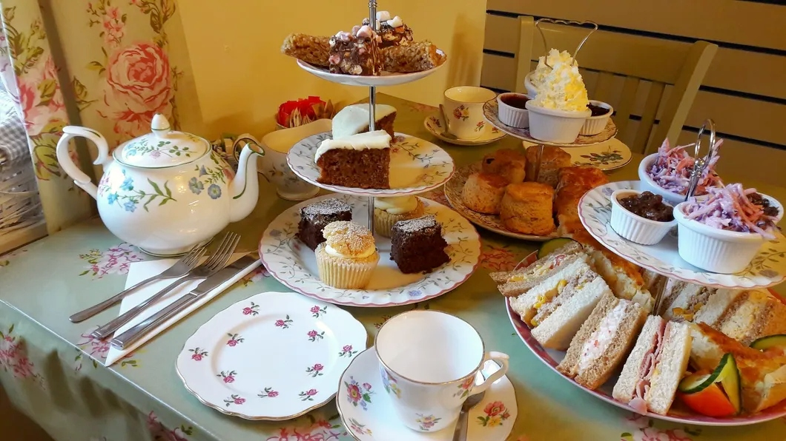

Gallery
×

"Really super lunch at Sally's today.
Lovely food, very welcoming, child
friendly, and very helpful with our
dietary requirements."
- Hazel P
"Lovely food. Great service. Couldn't ask for more."
- Alyson T
"WOW!! What a friendly, cosy place! Food to die for!"
- Gillian S
"Wonderful cafe with amazing food and customer service! Clean and cosy with a friendly atmosphere. You can tell a lot of love and passion has gone into the business!"
- Megan C
"Another wonderful lunch at Sally's, all freshly made & well presented - the chocolate orange scone with Nutella went down a treat!"
- Jill D
About us...
Sally Longstaff started Sally's Warwick Bridge
in 2013 with one member of part time staff.
Now Sally employs twelve including her Daughter Jessica and Husband Mark. Making
it a family affair.
We consistenly strive to offer gluten-free
options such as scones, cakes, and bread. A
significant portion of our sandwich fillings
and jacket potato selections are gluten-free.
Additionally, we maintain a consistent
inventory of vegan-friendly items.
Our commitment extends to accommodating
various dietary requirements, and we
encourage you to enquire for personalised
assistance.
2024 Sees another year of Sally's
being the home of region 22 PCGB. Porsche owners and
enthusiasts meet on the first Tuesday of the month at
Sally's for a catch up.
Monday - Saturday:
9:00AM - 4:00PM
Sunday:
Sun: 10:00AM - 4:00PM
When booking afternoon teas or picnic boxes, please make sure you call in advance.
Gallery
Contact us
sally@sallyswarwickbridge.co.uk
01228 317071
Sally's
Warwick Bridge
Carlisle
CA4 8RN